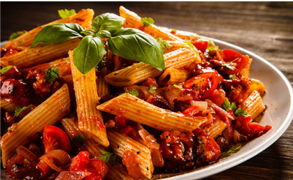

Pasta

Ingredientes
- 200 g de pasta (espagueti, penne, etc.)
- 2 cucharadas de aceite de oliva
- 2 dientes de ajo picados
- 400 g de tomates triturados
- 1 cucharadita de azúcar
- Sal y pimienta al gusto
- 5 hojas de albahaca fresca
Preparacion
- Cocina la pasta en agua con sal.
- En una sartén, sofríe el ajo en aceite, añade el tomate, azúcar, sal y pimienta. Cocina 10 min.
- Mezcla la pasta con la salsa y albahaca picada.